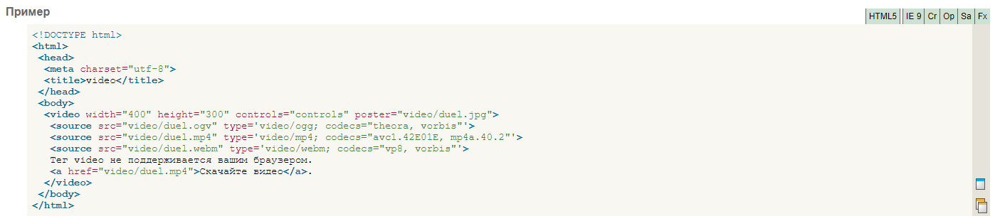

Вернуться на главную страницу
Описание
Добавляет, воспроизводит и управляет настройками видеоролика на веб-странице. Путь к файлу задается через атрибут src или вложенный тег -source-.

Больше информации по
этой
ссылке.